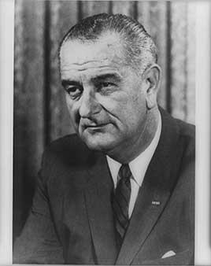

Took office when Kennedy was assassinated and pushed through the Civil Rights Act, the Voting Rights Act, Medicare and Medicaid, and the War on Poverty. He escalated the Vietnam War from about 16,000 advisers to more than 500,000 troops, and announced in 1968 that he would not seek re-election.
Shaded areas show the years in office, with a few years before and after for comparison. Budget years ran July to June until 1976 (now October to September), so each year's figures cover parts of two calendar years.
June 30, 1963 (end of fiscal 1963): $305.86 billion → June 30, 1968 (end of fiscal 1968): $347.58 billion
Daily debt figures don't exist before 1993, so Johnson's numbers use the fiscal years closest to his term.
Debt as a share of GDP. Above 100% means the debt is bigger than a year of everything the country produces.
Money borrowed each budget year (below the line) or paid down (above).
Nov 1963: 5.7% → Jan 1969: 3.4%. Monthly rates; the chart shows yearly averages.
How much prices rose each year (consumer price index).
What everyday prices and paychecks did while in office.
Prices use the consumer price index (MeasuringWorth). The minimum wage is the federal rate set by Congress.
324 orders, numbered 11128–11451.
Source: National Archives: Johnson executive orders (full list of every order).
Created the commission to investigate Kennedy's assassination.
Federal RegisterRequired federal contractors to take affirmative action against discrimination. Revoked in 2025 after 60 years.
Federal RegisterCreated a commission to study the causes of that summer's urban riots; it warned of 'two societies, one black, one white'.
Federal RegisterExtended the federal contractor rules to bar discrimination against women.
Federal RegisterSet up a national commission on the causes of violence after the assassinations of Martin Luther King Jr. and Robert Kennedy.
Federal RegisterSource: Executive Orders Archive, compiled from the American Presidency Project and the Federal Register. Topics are the archive's automated tags; "Revoked" and similar labels come from the Federal Register's records.
A pardon wipes out the punishment for a federal crime; a commutation shortens a sentence but leaves the conviction. Counts are by federal fiscal year. The Justice Department does not publish yearly commutation counts for 1964–1966, so 200 of his 226 commutations are left out of the chart.
Source: U.S. Dept. of Justice, clemency statistics, which lists every recipient with the crime and sentence.
The crime: Conflict of interest and conspiracy to defraud the government in a Maryland savings and loan case (convicted 1963)
Sentence: Probation and a $40,000 fine
Why it drew attention: A former Democratic congressman from Alabama.
SourceThe same checklist for every president. Tap a row for details and sources.
No articles of impeachment were voted on.
Never charged.
No member of his administration was convicted. Bobby Baker, his longtime aide from the Senate, was convicted of tax evasion and fraud in 1967.
None were appointed.
The Senate's Church Committee (1975–76) found the FBI provided Johnson with political intelligence, including wiretaps and surveillance of civil rights groups and delegates at the 1964 Democratic convention.
SourceWhat happened, what was proven, and how it ended.
Reported attacks on U.S. destroyers led Congress to authorize war in Vietnam. The second attack, on August 4, almost certainly never happened, according to a 2005 NSA history.
Outcome: Whether Johnson knowingly exaggerated is debated; Congress repealed the resolution in 1971.
SourceOfficials publicly claimed progress in Vietnam while privately doubting the war could be won.
Outcome: The Pentagon Papers, leaked in 1971, documented the gap.
SourceThe FBI wiretapped and monitored civil rights leaders and the Mississippi Freedom Democratic Party and passed the information to the White House.
Outcome: Documented by the Church Committee in 1976.
SourceJohnson's former Senate aide used his position to build a fortune through influence deals.
Outcome: Baker was convicted; allegations that Johnson benefited were never established.
SourceWidely quoted remarks, with the context they were said in.
And we shall overcome.
We are not about to send American boys nine or ten thousand miles away from home to do what Asian boys ought to be doing for themselves.
I shall not seek, and I will not accept, the nomination of my party for another term as your President.